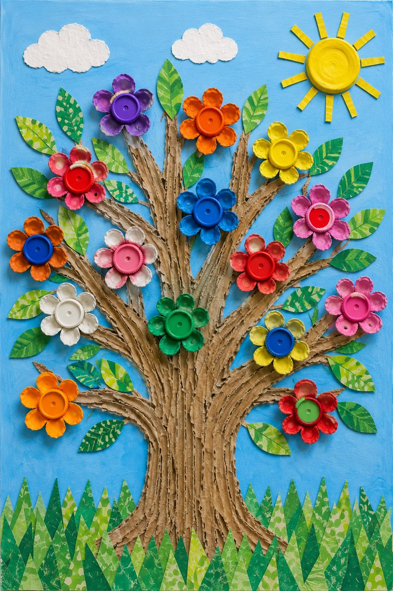

DÜNYANIN SIFIR ATIK ORMANI
Kapak Çiçek Ağacı
A01 · Artırılmış Gerçeklik

Butona dokunun, kamera izni verin ve telefonu A01 eserinin tamamını görecek şekilde tutun. Ağaç canlanacak.
Başlatılıyor…
Uygulama indirmenize gerek yok · Kamera görüntüsü kaydedilmez